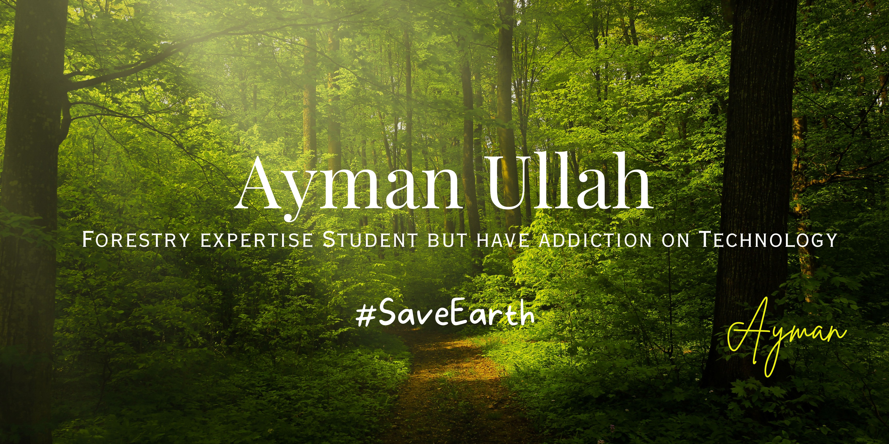

AYMAN ULLAH
I am a/an
About Me
I'm a Bangladeshi Forestry Expert, Programmer, and Tech Enthusiast. I specialize in Software Development, Full-stack Engineering, AI/ML, Android/iOS Apps, Cybersecurity, Web Design, and Networking. I love building futuristic systems, blending technology with environmental science.

Certifications & Skills
A selection of certifications and platforms where I've developed my skills.
Platforms & Providers:
My Certifications:
Google IT Support Professional Certificate
Provider: Google (via Coursera)
Skills Gained: Computer Programming · Cloud Computing · Computer Networking · Computer Architecture · Network Security · Network Architecture · Linux · Network Modeling · Critical Thinking · Problem Solving · Leadership and Management · Communication · Accounting · And many more.
Verification: Go to LinkedIn Profile
Google Cybersecurity Professional Certificate
Provider: Google (via Coursera)
Skills Gained: Network Security · Cloud Computing · Cybersecurity · Python Programming · Vulnerability Assessment and Penetration Testing (VAPT) · Linux · SQL · Intrusion Detection Systems (IDS) · Security Information and Event Management (SIEM) tools · AI in Cybersecurity Analysis · Cloud Computing Security · And many more.
Verification: Go to LinkedIn Profile
Google Data Analytics Professional Certificate
Provider: Google (via Coursera)
Skills Gained:Data Analysis · SQL · Data Visualization · Data Management · Spreadsheet Software · General Statistics · Business Analysis · Business Communications · And many more.
Verification: Go to LinkedIn Profile
Google Advanced Data Analytics Professional Certificate
Provider: Google (via Coursera)
Skills Gained:Data Science · Data Analysis · Python Programming · Machine Learning · Statistical Analysis · Tableau Software · Jupyter Notebook · Exploratory Data Analysis (EDA) · Regression Models · Predictive Modelling · Kaggle · And many more.
Verification: Go to LinkedIn Profile
Google UX Design Professional Certificate
Provider: Google (via Coursera)
Skills Gained:User Experience (UX) Design · And many more.
Verification: Go to LinkedIn Profile
Google IT Automation with Python
Provider: Google (via Coursera)
Skills Gained:Python Programming · Troubleshooting & Debugging · Automation · Configuration Management · Using Version Control · And many more.
Verification: Go to LinkedIn Profile
Google Digital Marketing & E-commerce Professional Certificate
Provider: Google (via Coursera)
Skills Gained:Marketing · Email Marketing · Data Analysis · Display Advertising · Writing · Search Engine Optimization (SEO) · E-Commerce · Web Development · Advertising · Communication · Social Media · Social Media Marketing · And many more.
Verification: Go to LinkedIn Profile
Microsoft Power BI Data Analyst Professional Certificate
Provider: Microsoft Corporation (via Coursera)
Skills Gained:Microsoft Power BI · Generative AI in Power BI · Microsoft Excel · Microsoft Power Query · Data Analysis · SQL · DAX · Data Visualization · Data Management · Data Configuration · Data Transformation · Data Modeling · Report Building · Report Design · And many more.
Verification: Go to LinkedIn Profile
Microsoft Cybersecurity Analyst Professional Certificate
Provider: Microsoft Corporation (via Coursera)
Skills Gained:Network Security · Cybersecurity · Cloud Computing · AI in Cybersecurity Analysis · Vulnerability Assessment and Penetration Testing (VAPT) · Cloud Computing Security · Security Information and Event Management (SIEM) tools · Intrusion Detection Systems (IDS) · And many more.
Verification: Go to LinkedIn Profile
IBM Full Stack Software Developer Professional Certificate
Provider: International Business Machines (IBM) Corporation (via Coursera)
Skills Gained:Software Engineering · Software Development · Software Testing · Software Architecture · DevOps · Computer Programming · Cloud Computing · Web Development · Leadership and Management · Communication · Software as a Service (SaaS) · And many more.
Verification: Go to LinkedIn Profile
IBM DevOps and Software Engineering Professional Certificate
Provider: International Business Machines (IBM) Corporation (via Coursera)
Skills Gained:DevOps · Software Engineering · Linux · Software Development · Software Testing · Cloud Computing · Continuous Integration and Continuous Delivery (CI/CD) · And many more.
Verification: Go to LinkedIn Profile
IBM Cybersecurity Analyst Professional Certificate
Provider: International Business Machines (IBM) Corporation (via Coursera)
Skills Gained:Cybersecurity · Cloud Computing Security · Network Security · Vulnerability Assessment and Penetration Testing (VAPT) · AI in Cybersecurity Analysis · And many more.
Verification: Go to LinkedIn Profile
IBM Data Science Professional Certificate
Provider: International Business Machines (IBM) Corporation (via Coursera)
Skills Gained:Data Science · Generative AI · Data Analysis · Machine Learning · Python Programming · And many more.
Verification: Go to LinkedIn Profile
IBM Data Engineering Professional Certificate
Provider: International Business Machines (IBM) Corporation (via Coursera)
Skills Gained:Databases · SQL · Big Data · Leadership and Management · Network Security · Data Management · Data Analysis · Data Visualization · Machine Learning · Cloud Computing · Computer Programming · Data Visualization Software · And many more.
Verification: Go to LinkedIn Profile
IBM AI Engineering Professional Certificate
Provider: International Business Machines (IBM) Corporation (via Coursera)
Skills Gained:Artificial Intelligence (AI) · Deep Learning · Neural Networks · PyTorch · Large Language Models (LLM) · Transformers · And many more.
Verification: Go to LinkedIn Profile
IBM Machine Learning Professional Certificate
Provider: International Business Machines (IBM) Corporation (via Coursera)
Skills Gained:Machine Learning · Artificial Intelligence (AI) · Supervised Learning · Exploratory Data Analysis (EDA) · Regression Analysis · Hypothesis Testing · Algorithms · And many more.
Verification: Go to LinkedIn Profile
IBM AI Developer Professional Certificate
Provider: International Business Machines (IBM) Corporation (via Coursera)
Skills Gained:Artificial Intelligence (AI) · Generative AI · Continuous Integration and Continuous Delivery (CI/CD) · Software Engineering · Software Architecture · HTML · Cascading Style Sheets (CSS) · Computer Networking · Software Development · And many more.
Verification: Go to LinkedIn Profile
Meta Android Developer Professional Certificate
Provider: Meta Platforms, Inc. (via Coursera)
Skills Gained:Software Development · Android Development · Mobile Application Development · Web Development · User Experience (UX) · Computer Programming · Algorithms · Data Structures · Leadership and Management · And many more.
Verification: Go to LinkedIn Profile
Meta iOS Developer Professional Certificate
Provider: Meta Platforms, Inc. (via Coursera)
Skills Gained:Software Development · Mobile Application Development · iOS Development · Web Development · User Experience (UX) · Computer Programming · Algorithms · Data Structures · Leadership and Management · And many more.
Verification: Go to LinkedIn Profile
Meta Front-End Developer Professional Certificate
Provider: Meta Platforms, Inc. (via Coursera)
Skills Gained:HTML · Cascading Style Sheets (CSS) · JavaScript · Web Development · React.js · Algorithms · User Interface Design · User Experience (UX) · And many more.
Verification: Go to LinkedIn Profile
Meta Back-End Developer Professional Certificate
Provider: Meta Platforms, Inc. (via Coursera)
Skills Gained:Software Testing · Computer Programming · Algorithms · Big Data · Databases · Python Programming · HTML · Cascading Style Sheets (CSS) · SQL · And many more.
Verification: Go to LinkedIn Profile
Udemy
Provider: Udemy, Inc.
Description:Udemy, Inc. is an education technology company, founded in May 2010 by Eren Bali, Gagan Biyani, and Oktay Caglar. It is based in San Francisco, California, United States. The platform hosts online courses, mostly connected to job-related skills.
Learner Profile: View Udemy Profile
Coursera
Provider: Coursera, Inc.
Description:Coursera Inc. is an American global massive open online course provider. It was founded in 2012 by Stanford University computer science professors Andrew Ng and Daphne Koller. Coursera works with universities and other organizations to offer online courses, certifications, and degrees in a variety of subjects.
Learner Profile: View Udemy Profile
Mehedi Shakeel Academy
Provider: Mehedi Shakeel
Course Name:Ethical Hacking & Cyber Security Masterclass.
Website: Course Details